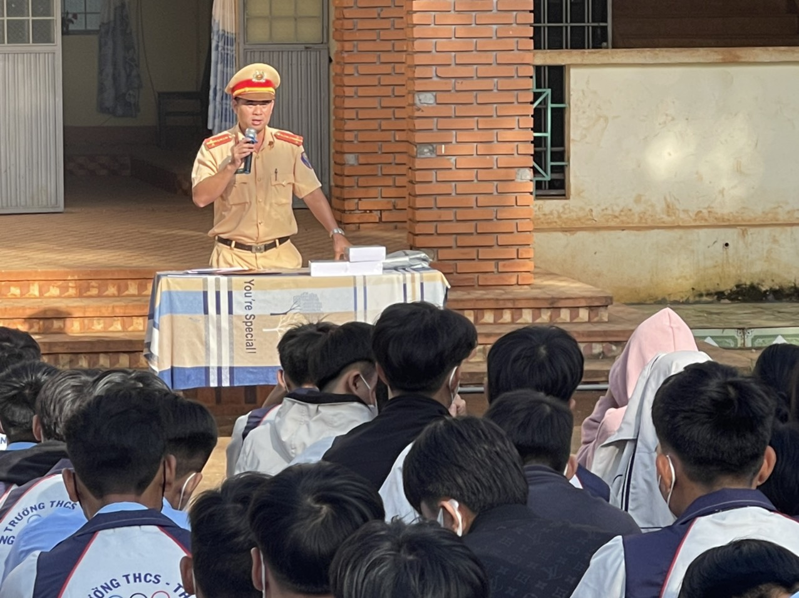
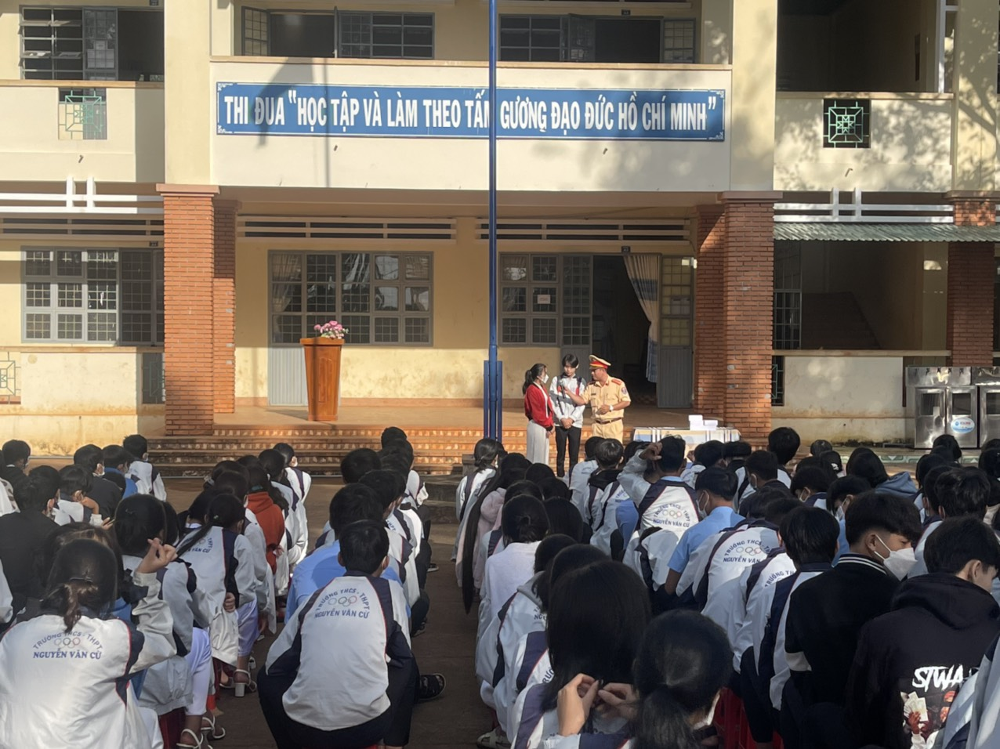
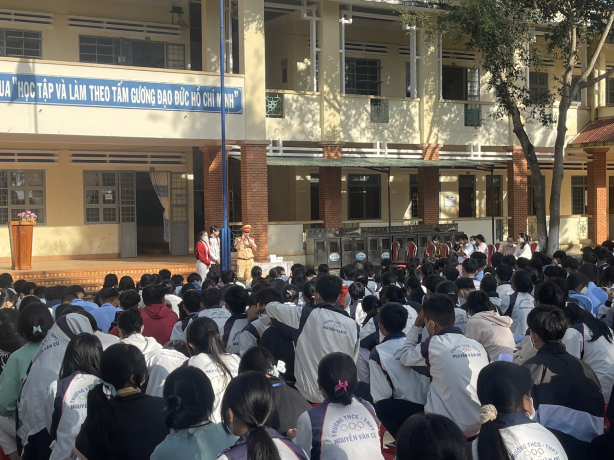

Trường THPT Nguyễn Văn Cừ được thành lập ngày 15 /6 /2009 theo Quyết định số 311 /QĐ.UBND của UBND Tỉnh Gia Lai.
Với phương châm tất cả vì đàn em thân yêu. Dù là ngôi trường còn trẻ lại đóng chân địa bàn khó khăn nhưng tập thể cán bộ, giáo viên và học sinh luôn phấn đấu thi đua “Dạy tốt - Học tốt” hoàn thành tốt nhiệm vụ chính trị của mình.
Liên tiếp những năm vừa qua, kỷ cương, nề nếp của nhà trường luôn được giữ vững; chất lượng học tập và rèn luyện đạo đức của học sinh được nâng cao, cơ sở vật chất thường xuyên được trang bị, bổ sung tạo môi trường học tập khang trang, sạch đẹp.
Với một đội ngũ giáo viên yêu nghề, với truyền thống hiếu học của học sinh Nguyễn Văn Cừ, trường đã đạt được nhiều kết quả tốt. Tỉ lệ học sinh tốt nghiệp hàng năm trung bình 95-97%.
Đội CSGT Công an huyện Chư Sê tuyên truyền, phổ biến giáo dục Pháp luật về ATGT cho học sinh Trường THCS và THPT Nguyễn Văn Cừ năm học 2022-2023.
Đội CSGT Công an huyện Chư Sê tuyên truyền, phổ biến giáo dục Pháp luật về ATGT cho học sinh Trường THCS và THPT Nguyễn Văn Cừ năm học 2022-2023.
Đội CSGT Công an huyện Chư Sê tuyên truyền, phổ biến giáo dục Pháp luật về ATGT cho học sinh Trường THCS và THPT Nguyễn Văn Cừ năm học 2022-2023.
